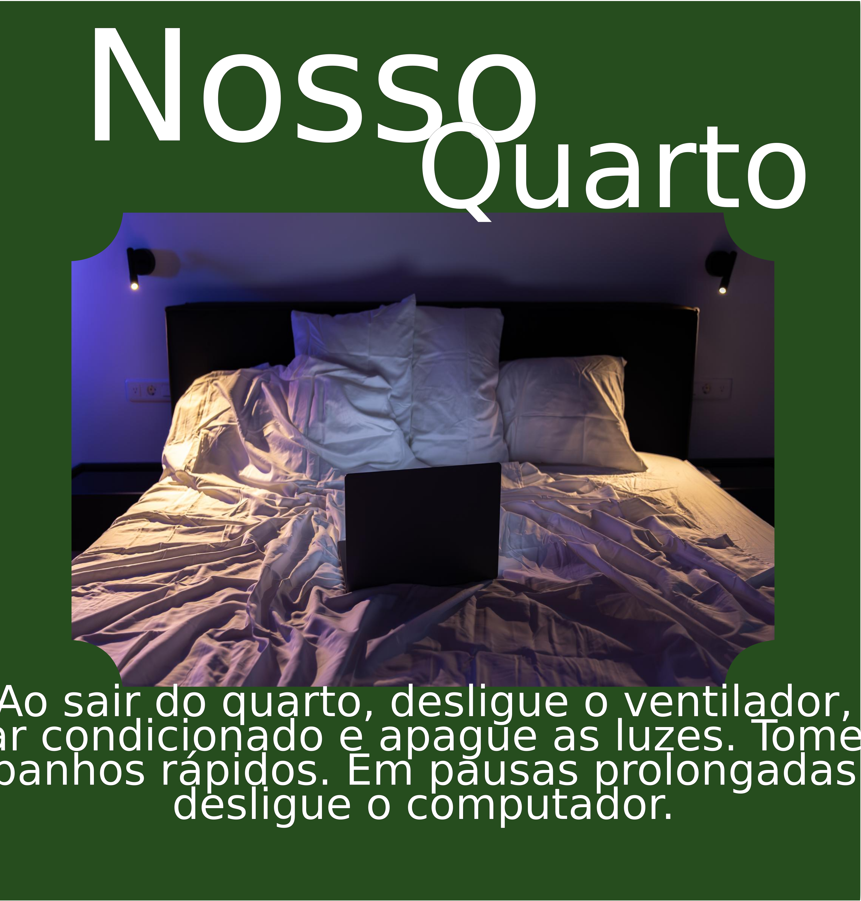
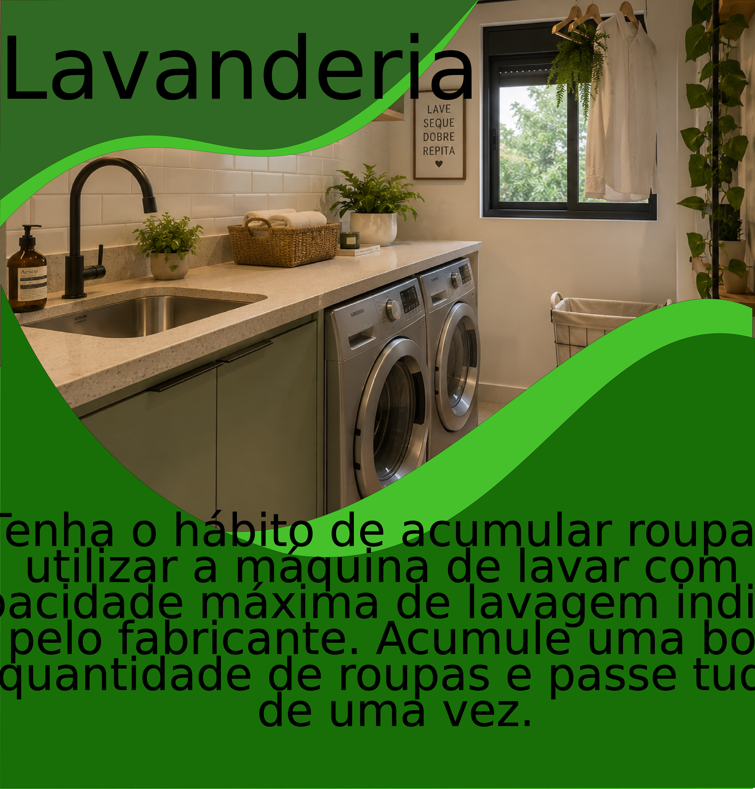
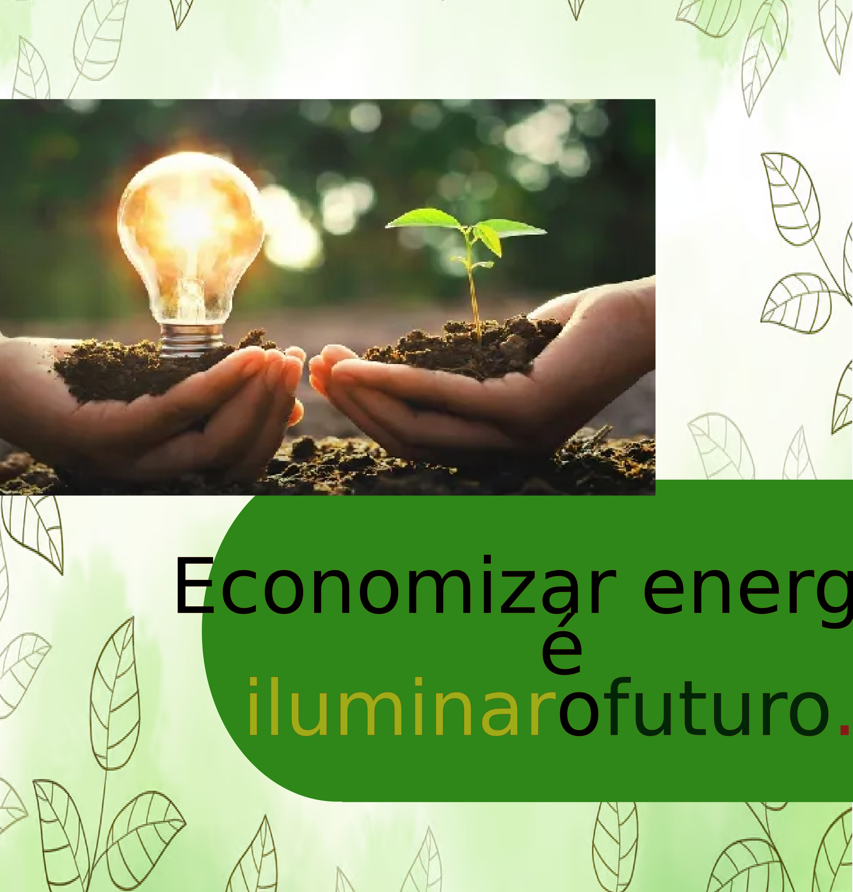
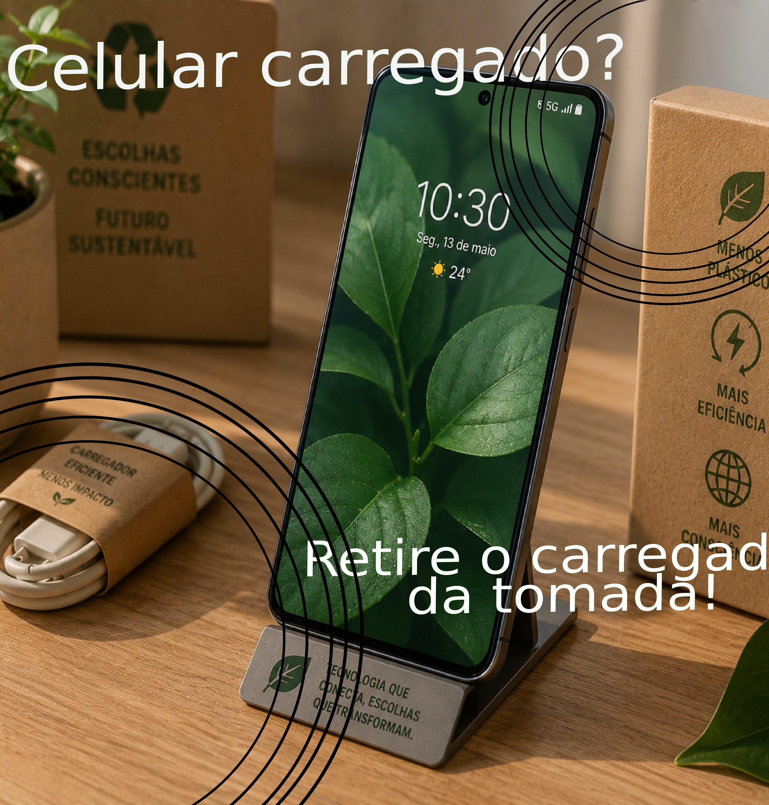

Feramenta de Desenho
Na disciplina de Feramenta de Desenho, desenvolvemos um trabalho com o objetivo de mostrar, por meio de cards, a importância da Educação Financeira no dia a dia. A atividade nos mostrou que pequenas atitudes, como economizar água e energia, evitar desperdícios, cuidar dos objetos e consumir de forma consciente, podem contribuir para uma melhor organização financeira.
Enquanto faziamos este trabalho, utilizamos a criatividade para criar os cards para que mandem uma mensagens educativas de forma fácil de entender. A atividade também nos fez entender a relação entre economia, sustentabilidade e responsabilidade no uso dos recursos com computadores, celulares, etc.
Com esse trabalho, aprendemos que a Educação Financeira está presente em diversas situações do nosso cotidiano e que, com planejamento e consciência, é possível economizar, preservar o meio ambiente e desenvolver hábitos mais responsáveis.
CARDS

No primeiro card, representamos um quarto organizado para mostrar que a organização também faz parte da educação financeira. Cuidar dos móveis, roupas, calçados e objetos pessoais evita gastos desnecessários com reposições e incentiva o consumo consciente. Além disso, manter o ambiente organizado ajuda a valorizar aquilo que já possuímos, reduzindo compras por impulso e promovendo hábitos de responsabilidade.

O segundo card retrata uma cozinha, destacando a importância de evitar desperdícios de alimentos, água e energia elétrica. Durante o desenvolvimento da atividade, percebemos que pequenas atitudes, como aproveitar melhor os alimentos, fechar a torneira enquanto não está sendo utilizada e desligar os aparelhos quando não estão em uso, fazem grande diferença no orçamento familiar. Esse ambiente demonstra que a educação financeira está presente nas tarefas do dia a dia e que economizar recursos também significa economizar dinheiro.

Neste card, criamos uma sala de estar para representar o uso consciente dos aparelhos eletrônicos e da iluminação. A televisão, o ventilador, as lâmpadas e outros equipamentos devem ser utilizados de forma responsável, evitando o desperdício de energia. Com essa representação, mostramos que pequenas mudanças de comportamento podem reduzir o valor da conta de luz e contribuir para uma administração financeira mais eficiente. Também aprendemos que preservar os equipamentos aumenta sua durabilidade e evita gastos com manutenção ou substituição.

O quarto card representa uma lavanderia e foi desenvolvido para demonstrar a importância da economia de água e energia durante a lavagem das roupas. Aprendemos que utilizar a máquina de lavar apenas quando ela estiver cheia, evitar desperdícios de água e escolher a quantidade correta de sabão são atitudes que reduzem os custos da casa. Além disso, cuidar das roupas corretamente aumenta sua vida útil, diminuindo a necessidade de comprar novas peças com frequência.

Neste card, trabalhamos a relação entre educação financeira e sustentabilidade. Representamos práticas como a reciclagem, a coleta seletiva, o reaproveitamento de materiais e a preservação do meio ambiente. Com essa atividade, entendemos que consumir de forma consciente reduz desperdícios, gera economia e contribui para um futuro mais sustentável. A consciência ecológica mostra que é possível cuidar do planeta enquanto também cuidamos das finanças.

No último card, representamos diversos aparelhos eletrônicos, como celular, computador e outros equipamentos utilizados no cotidiano. O objetivo foi mostrar a importância de utilizar esses dispositivos com responsabilidade, evitando desperdício de energia e cuidando corretamente dos aparelhos para aumentar sua durabilidade. Também aprendemos que pesquisar preços antes de comprar, evitar trocas desnecessárias e realizar a manutenção adequada são atitudes que ajudam a economizar dinheiro e incentivam o consumo consciente.